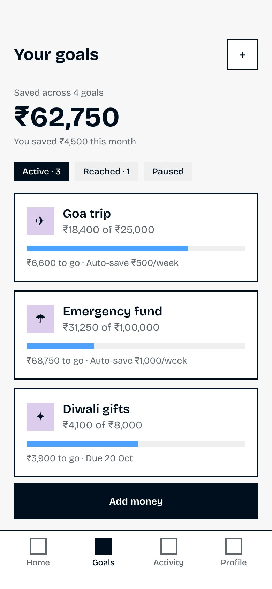

What is Claude, what is design, and why AI designs all look the same
<you-will-learn>
- What Claude is, in plain words
- What “design” means when we talk about apps
- Why AI-made apps all look alike — and the simple fix
Welcome! You don't need to know anything to start. No design skills, no coding, no AI experience. If you can type a message to a friend, you can do this course. We'll go one small step at a time.
First: what is Claude?
Claude is an AI assistant made by a company called Anthropic. You open it on a website or app, type a message, and it types back — like chatting with a very fast, very patient helper who has read a huge amount about almost everything.
You can ask Claude to explain things, write things, and — the important part for us — make things: web pages, app screens, little tools. You describe what you want in normal words, and Claude builds it.
claude.ai, make a free account, and type: Explain what an app designer does, like I'm 10 years old.That's it — you've used Claude.Second: what is “design”?
Think about the apps on your phone — a shopping app, a bank app, a food delivery app. Someone decided where every button goes, what colour it is, how big the words are, and what happens when you tap. That someone is a designer, and those decisions are design.
Good design means people can use the app without thinking: the important button is easy to find, the text is easy to read, and nothing is confusing.
The problem: AI designs all look the same
If you ask an AI to “design a savings app screen”, you'll get something that looks okay — but it looks like every app. Purple colours, round boxes, a big number, some icons. Why?
Imagine asking a new student to draw your house. They've never seen it. So they draw a “house”: square, triangle roof, a door, two windows. Not wrong — just not yours.
The AI is that student. It has never seen your app, so it draws the average of all apps.
The fix: give Claude your rulebook, once
What if you gave the student a photo of your house and a list — “blue door, red roof, three windows, a mango tree on the left”? Now every drawing looks like your house.
That's the whole idea of this course. You write down your app's look as a rulebook — colours, sizes, buttons, words — and save it inside Claude. From then on, everything Claude designs follows your rules.
See the difference
This screen is from a pretend savings app called Saffron that we use throughout the course. The only message typed was “design the Goals tab”. The cream background, the dark green button, the rupee amounts, the friendly words — all of it came from Saffron's rulebook.

The road ahead: Level 0 → 100
- Level 10 — Make your rulebook. Teach Claude what your app looks like.
- Level 25 — Make screens. Ask for a screen in three lines and get every version of it.
- Level 50 — Spot problems. Learn how to tell if a design is good, like a senior designer.
- Level 75 — Check the whole journey. Make sure screens fit together, and collect feedback.
- Level 90 — Hand it over. Explain your design so engineers can build it.
- Level 100 — Build your own tools. Go from using AI to building with it.
Homework (10 minutes)
Pick one app you want to design for — your own product, your company's app, or any app you like for practice. Take 4–6 screenshots of it on your phone: a home screen, a list, a form, a details page. Save them in one folder. You'll use them in Lesson 2.